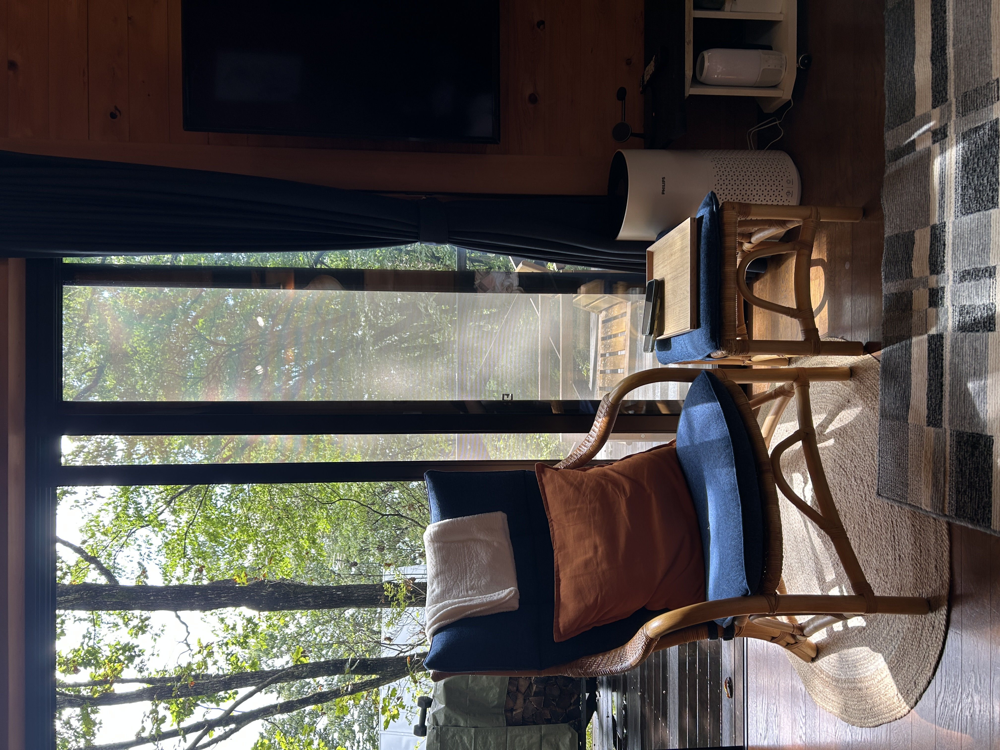
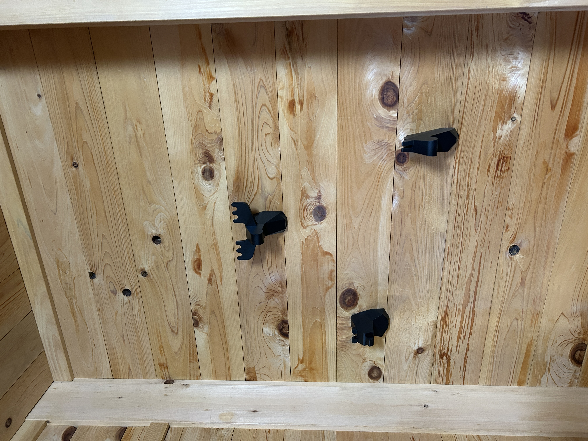
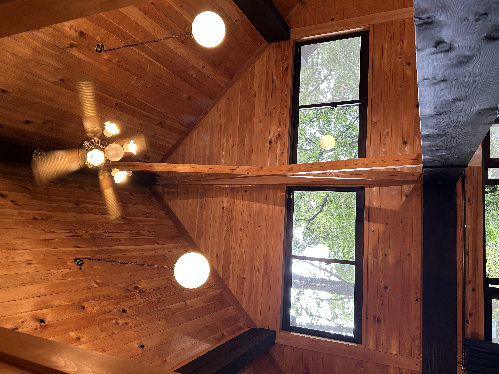

Forest view
Large windows and soft morning light make the living space feel close to the trees.
Private home in Nasu, Japan
A calm private house for slow mornings, mountain air, and warm evenings near the woods of Nasu. More details and booking information will be added soon.
The stay
The house is being prepared as a welcoming base for couples, families, and friends visiting Nasu. The first draft keeps the facts flexible until the final room count, amenities, access, and booking links are confirmed.



Highlights
Use these blocks as placeholders for the final amenities, such as parking, kitchen, Wi-Fi, beds, bath, pets, BBQ, or nearby hot springs.
Large windows and soft morning light make the living space feel close to the trees.
Natural timber surfaces give the rooms a relaxed cabin atmosphere.
A convenient place to explore cafes, farms, museums, and seasonal nature.
The site is ready for final photos, house rules, prices, and booking links.
Photos
Tap a photo to open it larger. The gallery can be reordered later once the best hero and room photos are selected.
Around Nasu
Nasu is loved for its highland scenery, onsen culture, bakeries, farms, museums, and calm drives. Exact access times and local recommendations can be added after the address is finalized.
Seasonal forests, open skies, and quiet walks close to the highland landscape.
A classic Nasu rhythm: spend the day exploring, then slow down in a nearby hot spring.
Good for short escapes from Tokyo or longer stays with relaxed mornings.
Booking
Add the Airbnb link, price notes, availability calendar, check-in instructions, and host contact here when they are ready.